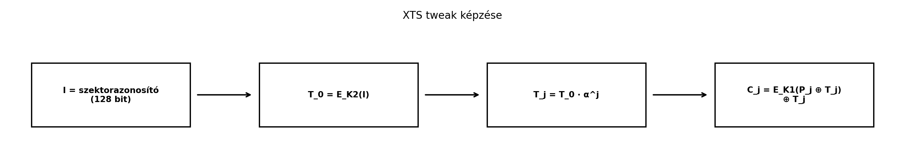
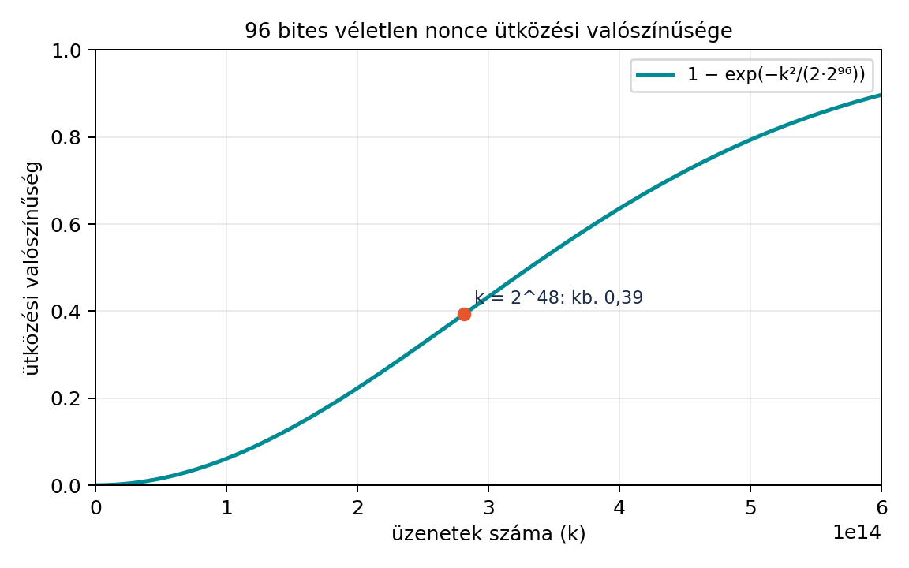

Az előző alfejezetben láttuk, hogy egy blokkrejtjel pusztán önmagában csak rövid, fix üzeneteket tud titkosítani. Az üzemmódok teszik lehetővé, hogy tetszőleges hosszúságú üzenetet, sőt lemezt is titkosítsunk. Az üzemmódok közös eleme az inicializáló vektor (IV) vagy az egyszer használatos érték (nonce). Ha ezt rosszul választjuk, a titkosítás papíron „AES-256”, a gyakorlatban viszont katasztrófa lehet: két rejtett szövegből kiolvasható az üzenet, vagy a hitelesített titkosítás egész védelme összeomlik.
A lemeztitkosítás ezt a problémát tovább feszíti. Egy szektor titkosításához nem áll rendelkezésre külön tárolt nonce, hiszen a lemez fizikai felülete adott, és véletlen hozzáféréssel kell bármely szektort önállóan visszafejteni. Erre vezették be az XTS üzemmódot, amely szektorazonosítót és blokkindexet használ „tweak”-ként.

Az ábra az XTS egyik lényegét mutatja: a szektorazonosítóból titkos maszkot képzünk, majd azt blokkonként tovább forgatjuk. A pontos képleteket alább ismertetjük.
Definíció. Inicializáló vektornak (IV) nevezünk minden olyan nyilvános bemenetet, amelyet a titkosító eljárás a kulcs mellett használ a determinizmus megtörésére. A nonce az IV-nek az a fajtája, amelynél a biztonság elsődleges feltétele az egyediség egy kulcson belül. A tweak olyan, a kulcstól függő eljárással kombinált nyilvános paraméter, amely a blokkrejtjelt a pozícióhoz vagy az adategységhez köti.
Az üzemmódok eltérő követelményeket támasztanak:
A rejtjelező rutinokban a kulcsgeneráláshoz hasonlóan fontos, hogy a nonce ne ütközzön. Ha a nonce-ot véletlenül választjuk, a születésnapi paradoxon miatt az ütközés valószínűsége nem intuitív módon nő.
Állítás. Legyen a lehetséges 96 bites nonce-ok száma, és az egy kulccsal titkosított üzenetek száma. Ekkor a véletlen nonce-ütközés valószínűsége jól közelíthető
Példa. Ha , akkor
Ez elsőre elhanyagolhatónak tűnik, de nagy forgalmú rendszerben nem biztonságos határ: üzenet például egy percenként 130 ezer tranzakciót feldolgozó szolgáltatásnál nagyjából 23 nap alatt gyűlik össze (percenként 8 millió üzenetnél már kb. 9 óra alatt), feltéve, hogy ugyanazt a kulcsot használjuk. üzenetnél a valószínűség , -nál pedig már kb. .

A gyakorlati szabály: vagy használjunk számlálót, vagy gondoskodjunk a nonce-tér elegendően nagy méretéről, és állítsunk be kulcsonkénti üzenetszám-korlátot. Ezt a kérdést a Konkrét biztonság és üzemmódok biztonsági korlátai alfejezetben fogjuk mennyiségileg tárgyalni.
A CTR üzemmód úgy titkosít, hogy a nonce-ból és egy számlálóból képzett kulcsfolyamot (keystream) XOR-ozza a nyílt szövegre. Ugyanazon kulcs és nonce esetén a kulcsfolyam azonos.
Támadás. Legyen és két, azonos nonce-szal készült üzenet, melyek rejtett szövege és . Ekkor
ahol a közös kulcsfolyam blokk. A támadó tehát a két nyílt szöveg XOR-ját kapja meg. Ha az egyik nyílt szöveg ismert, a másik azonnal visszaállítható; ha mindkettő ismeretlen, nyelvi redundancia, fejléc-információ vagy ismert fájlformátum alapján gyakran mindkettő rekonstruálható.
Példa. Legyen a kulcsfolyam első 4 bájtja
0x5a 0x3c 0x91 0x77. Legyen
0x41 0x42 0x43 0x44 (ABCD), és
0x57 0x58 0x59 0x5a (WXYZ). Ekkor
= 0x1b 0x7e 0xd2 0x33, és
= 0x0d 0x64 0xc8 0x2d.
A támadó kiszámítja
értékét: 0x16 0x1a 0x1a 0x1e. Ez éppen
,
hiszen 0x41 0x42 0x43 0x44 és
0x57 0x58 0x59 0x5a bájtonkénti XOR-ja szintén
0x16 0x1a 0x1a 0x1e.
Ha a támadó ismeri az ABCD nyílt szöveget, akkor
,
tehát azonnal megkapja a WXYZ szöveget.
Továbbvitt eredmény. A nonce-újrahasználat CTR-ben azonos okból végzetes a AES-GCM, a ChaCha20-Poly1305 és az AEAD-interfész és sok aláírási séma esetében is; a GCM-ben a probléma a hitelesítő kulcs kinyeréséig terjed. A nem megfelelő nonce-korlátok kezelését a Nonce-visszaélés-ellenállás és kulcshasználati korlátok alfejezetben vizsgáljuk, az aláírások nonce-újrahasználatát pedig a Nonce-újrahasználat az aláírásokban és a determinisztikus nonce alfejezetben.
A GCM (Galois/Counter Mode) egy CTR-titkosításból és egy GHASH nevű
üzenethitelesítő kódból áll. Az újrahasznált nonce itt kétszeresen
veszélyes. Egyrészt a CTR-komponens miatt a fenti XOR-támadás érvényes.
Másrészt a GHASH hitelesítő kulcs, amely a H érték, a
tagokból kinyerhető, ha a támadó két azonos nonce-szal készült üzenetet
és azok hitelesítő címkéit ismeri. A tagok különbsége algebrai
egyenleteket ad H-ra, amelyekből a hitelesítő kulcs gyakran
néhány üzenetből meghatározható. Ezután a támadó tetszőleges üzenethez
hamis címkét tud előállítani, azaz az integritásvédelem is
összeomlik.
A gyakorlatban ezért a GCM-nél a nonce-oknak egy kulcson belül kötelezően egyedinek kell lenniük; a következő alfejezetekben látjuk, hogyan tervezhetünk nonce-újrahasználatra ellenálló AEAD-ot.
A lemeztitkosítás más követelményeket támaszt, mint a csatorna-titkosítás. A lemez szektorokból áll, mindegyik szektornak rögzített mérete van, és véletlen hozzáféréssel kell tudni bármely szektort olvasni és írni anélkül, hogy a teljes lemezt újratitkosítanánk. Nincs hely további IV tárolására, és a szektorok átrendeződhetnek a lemezhibák vagy a fájlrendszer miatt. Ezért a lemeztitkosító üzemmódok általában tweak-alapúak.
Definíció. Az XTS (XEX-based tweaked-codebook mode with ciphertext stealing) egy lemeztitkosító üzemmód, amely két azonos hosszúságú kulcsot használ: a blokkrejtjel titkosító kulcsa, a tweak maszk kulcsa. Egy blokk titkosítása a következő:
ahol
Itt a szektorazonosító (tipikusan a szektor címe, 128 bitre reprezentálva), a egy primitív eleme, a szorzás pedig a testbeli szorzás. A visszafejtés:
A szabványosított eljárást NIST SP 800-38E és IEEE 1619 írja le; az itt közölt képletek a lényeget rögzítik, a szabványok részletes reprezentációs konvenciókat is tartalmaznak.
Magyarázat. Az XTS szektoron belül minden blokkot más tweak-kel titkosít, így az azonos nyílt blokkok más és más rejtett blokkot adnak. A érték kulcsfüggő, tehát a támadó számára ismeretlen, viszont a szektorazonosító nyilvános. A rekurzívan számolható, ami gyors hardveres és szoftveres megvalósítást tesz lehetővé. Ha az utolsó szektorrész nem egész blokk, az XTS úgynevezett ciphertext stealing módszert használ: az utolsó két blokk adatait átrendezi, hogy a kimenet hossza megegyezzen a bemenet hosszával.
Biztonsági érvelés (vázlat). Az XTS-t úgy tervezték, hogy minden blokk egy tweakelt blokkrejtjellel titkosítódjon, mint egy apró, önálló rejtjel. A tweak kulcsfüggő maszkja elrejti az ECB-re jellemző mintázatokat, és a szektorok közötti függést is megszünteti. A biztonság azon alapszik, hogy a blokkrejtjel pszeudorandom permutáció, a kulccsal képzett maszk pedig egy kulcsfüggő tweak. A megengedett maximális blokkszámnál kisebb szektorméret esetén a szorzók mind különbözőek, így a tweak-ek sem ismétlődnek. A szabvány korlátozza az egy kulccsal titkosított adatmennyiséget, mert a biztonsági korlátok itt is második tagot kapnak.
A „hamis integritás”. Az XTS kizárólag titkosságot nyújt, integritást nem. A támadó a lemezt módosíthatja, blokkokat cserélhet, szektorokat visszajátszhat, és a rendszer semmilyen hibaüzenetet nem ad, mert nincs MAC-ellenőrzés. A támadó a tweak maszkot nem ismeri, ezért célzottan nem tudja a nyílt szöveg egy adott bitjét átfordítani úgy, mint a CTR-nél, de ettől még a módosítás detektálatlan marad. A felhasználók gyakran hiszik, hogy a titkosítás egyben véd a manipuláció ellen; ez tévhit. Ha lemezszintű integritást is akarunk, a titkosítás fölé külön réteget kell építeni, vagy más, integritással kombinált megoldást kell használni.
Példa a tweak számítására. Tegyük fel, hogy a
szektorazonosító
,
és a kulcsfüggő titkosítás egyszerűsített modellben
,
az
szorzó pedig egy olyan testben, ahol
stb. Az első három blokk tweakje
.
A gyakorlatban a test a
,
és a szorzás a x polinommal való szorzással, majd egy
irreducibilis polinommal történő redukcióval valósul meg. A képlet a
számolást mutatja be, nem a konkrét bájtértékeket.
A BitLocker, a LUKS2 és a FileVault 2 mind használnak XTS-alapú
titkosítást a lemezek védelmére. A BitLocker alapértelmezésben
XTS-AES-128 vagy XTS-AES-256 üzemmódot használ; a FileVault 2 jellemzően
XTS-AES-128-at, a LUKS2 pedig gyakran aes-xts-plain64
adatkulccsal fut. (A konkrét gyártói alapértelmezések és verziók időben
változnak, ezért éles beállításnál ellenőrizni kell a friss
dokumentációt.)
A lemeztitkosítás védelme addig tart, amíg a kulcs a memóriában van, vagy amíg a rendszer fut. A hidegindításos támadás (cold boot attack) során a támadó a lefagyasztott DRAM-ból, illetve a gyors újraindítással kinyert memóriatartalomból olvashatja ki a titkosítási kulcsokat. Ha a gép be van kapcsolva, a lemeztitkosítás nem véd a memóriát támadó ellen. A védekezés része a memória törlése újraindításkor, a rendszer leállítása alvó állapot nélkül, valamint biztonságos hardveres kulcstárolás.
Nonce-újrahasználat CTR-ben vagy GCM-ben. A fejlesztő számlálót állít be, de a folyamat újraindításakor a számláló lenullázódik, így a nonce ismétlődik. Megoldás: a számláló állapotát atomikusan, tartósan tárolni (vagy előre lefoglalt tartományokban kiosztani), és újraindításkor a rögzített érték fölött folytatni, vagy új kulcsot generálni; ha a számláló állapota elveszhet, a friss véletlen kezdőérték sem segít, mert az ismétlődhet.
Állandó IV használata CBC üzemmódban. A fix IV
az első blokkban determinista titkosítást okoz, és ugyanazon kezdő nyílt
szöveg mintázatot fed fel. Megoldás: minden Enc híváshoz
új, véletlen IV, amelyet a rejtett szöveggel együtt tárolnak vagy
küldenek.
Véletlen nonce generálása a random
modullal. A random modul célja játék és
szimuláció, nem kriptográfiai minőség. Kulcshoz, IV-hez, nonce-hoz
kizárólag secrets.token_bytes vagy os.urandom
használható.
Integritás elvárása XTS-től. A fejlesztő azt hiszi, hogy a lemeztitkosítás észleli a lemez manipulálását. Az XTS erre nem képes; ha integritás kell, külső hitelesítő réteget kell hozzáadni. A támadó által módosított szektor visszafejtése hibás, de a rendszer ezt nem észleli, hacsak nem ellenőrzi valaki.
A válaszokat a Megoldások elején találod.
1. feladat (A) Sorold fel a CBC, CTR és GCM üzemmód IV/nonce követelményeit, és jelezd, melyiknél kell az IV-nek előrejelezhetetlennek lennie.
2. feladat (A) Számítsd ki a 96 bites véletlen nonce ütközési valószínűségét és üzenet esetén a közelítő képlettel.
3. feladat (B) Két CTR-rel titkosított üzenet
ugyanazt a nonce-ot használja. Az egyik rejtett szöveg
0x9b 0x1f, a másik 0xe7 0x6a. Tudod, hogy az
első nyílt szöveg két bájtja 0x4f 0x6b. Mi a második nyílt
szöveg?
4. feladat (B) Tervezz nonce-kezelési stratégiát egy hosszú élettartamú szerverhez, amely egyetlen kulccsal percenként 200 000 üzenetet titkosít GCM-ben. Milyen nonce-forrást és milyen korlátot választanál, és hogyan kerülnéd el az újraindításból fakadó újrahasználatot?
5. feladat (C) Mutasd meg, hogy ha a elem rendje a testben , akkor az XTS-ben a tweak-ek mind különbözőek esetén, feltéve .
6. feladat (D) Tegyük fel, hogy egy játékimplementáció egyszerű XTS-szerű módot használ, de a tweak-maszkot az egész szektorhoz rögzíti, azaz minden blokkra. Mutass egy konkrét támadást: melyik ECB-re jellemző mintázat jelenik meg, és hogyan lehet blokkcserével meghamisítani az adatot?
Önellenőrzés – válaszok
Feladatok megoldása
CBC: véletlen, előrejelezhetetlen IV minden üzenethez; CTR: egyedi nonce, lehet véletlen vagy számláló; GCM: egyedi nonce, 96 bites ajánlott; CBC-nél kell előrejelezhetetlenség.
: . : .
A kulcsfolyam XOR-ja
0x9b 0x1f
0xe7 0x6a = 0x7c 0x75.
0x4f 0x6b
0x7c 0x75 = 0x33 0x1e.
Két tiszta lehetőség van. (a) Számláló alapú 96 bites nonce: az
állapotot minden kiosztás előtt tartósan (vagy előre lefoglalt
tartományokban) rögzítjük, újraindításkor a rögzített érték fölött
folytatjuk, vagy új kulcsot generálunk; így nincs ütközési valószínűség,
csak a számláló kimerülése jelent határt. (b) Véletlen 96 bites nonce,
kulcsonként korlátozott üzenetszámmal: a
üzenetes korlát (a NIST SP 800-38D szerinti érték, ellenőrizendő) 200
000 üzenet/perc mellett kb.
perc, azaz kb. 15 napos kulcscserét jelent; szigorúbb,
-es
korláttal
percenként kell kulcsot cserélni. Újraindításnál a véletlen
nonce-stratégiában elég friss os.urandom(12) nonce-ot
kérni, a számlálós stratégiában viszont tartós állapot vagy új kulcs
kell.
Indirekt tegyük fel, hogy valamely esetén. Ekkor . Mivel és testben vagyunk, , azaz . Ez azt jelentené, hogy rendje , ellentmondásban a feltétellel. Tehát a tweak-ek páronként különbözőek.
Ha minden blokkra, akkor az XTS képlet alakú. Mivel a maszk blokkonként azonos, az azonos nyílt blokkok azonos rejtett blokkot adnak: ez az ECB mód ismert mintázata. A támadó tehát a rejtett szövegben egyező blokkokat keresve azonosíthatja az azonos nyílt blokkokat. Blokkcserével pedig a szektor két blokkját felcserélve a visszafejtés az adott pozícióban az eredeti blokk visszafejtett értékét adja, de a fájlrendszer vagy alkalmazás ezt nem észleli; ha a támadó ismeri a struktúrát, adatot tud manipulálni. (A valódi XTS-ben a blokkonként eltérő miatt a blokkmintázat nem látszik, és a csere a visszafejtett tartalomban kiszámíthatatlan torzulást okoz, de integritást az sem nyújt.)
Az IV és a nonce kezelése a modern üzemmódok leggyakoribb bukási pontja. A CBC IV-vel szemben véletlen, előrejelezhetetlen IV-t kell használni, a CTR és a GCM számára pedig a nonce egy kulccsal történő egyszeri felhasználása a döntő. Véletlen 96 bites nonce esetén az ütközés valószínűsége üzenet után közelítéssel adódik, így a biztonságos gyakorlat ott is korlátot szab a kulcshasználatnak. A nonce-újrahasználat CTR-ben a két nyílt szöveg XOR-ját fedi fel, GCM-ben pedig a hitelesítő kulcs kinyerését is lehetővé teszi. Az XTS lemeztitkosító üzemmód szektorazonosítóval és blokkindexszel képzett tweak-maszkot alkalmaz, de semmilyen integritást nem nyújt. A hidegindításos támadás pedig arra figyelmeztet, hogy a lemeztitkosítás kulcsai a futó gép memóriájában veszélyben lehetnek.
A nonce-ütközés, a GCM- és XTS-konstrukció matematikai leírása stabil szakirodalmi tudás. A termékekre vonatkozó alapértelmezések (BitLocker, FileVault 2, LUKS2) gyártói dokumentációkban változhatnak; éles beállításnál ellenőrizd a friss változatokat. Az NIST SP 800-38E és az IEEE 1619 az XTS-re vonatkozó hivatkozások; a pontos paraméterkorlátokat a szabvány aktuális kiadása rögzíti. Ebben a szakaszban nem nyújtottam URL-t, és nem állítom, hogy a forrásokat ellenőriztem.